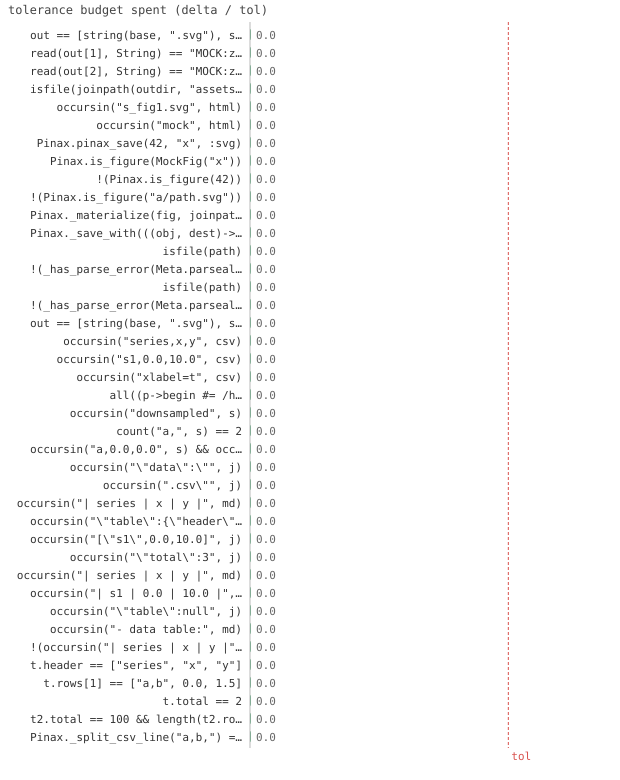
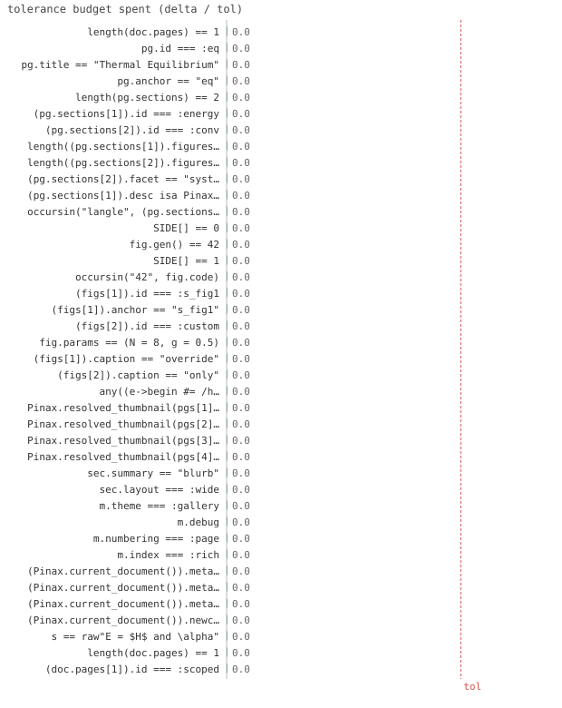
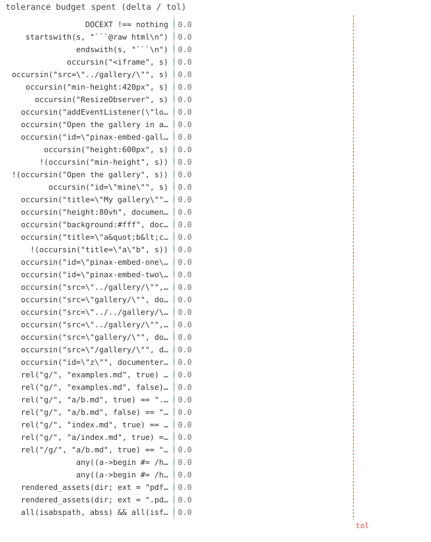
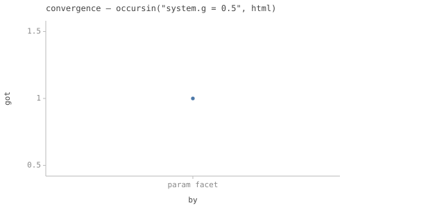
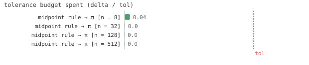
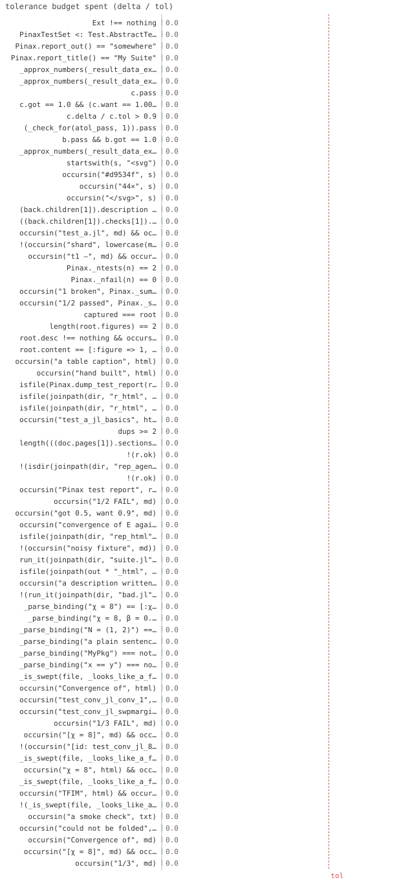

Test report
826/826 passed

test_agent.jl benchmark
15/15 passed · 6.83s

test_assets.jl benchmark
6/6 passed · 0.36s

test_backends_ext.jl benchmark
59/59 passed · 2.01s

test_benchmark.jl benchmark
76/76 passed · 1.65s

test_cache.jl benchmark
11/11 passed · 0.18s

test_cite.jl benchmark
24/24 passed · 1.5s

test_comments.jl benchmark
22/22 passed · 0.23s

test_contents.jl benchmark
32/32 passed · 0.54s

test_datavault.jl benchmark
14/14 passed · 8.03s

test_dispatch.jl benchmark
13/13 passed · 1.51s

test_document.jl benchmark
41/41 passed · 0.68s

test_documenter.jl benchmark
66/66 passed · 2.81s

test_equations.jl benchmark
22/22 passed · 0.24s

test_facet.jl benchmark
11/11 passed · 0.9s

test_hierarchy.jl benchmark
35/35 passed · 0.96s

test_imgformats.jl benchmark
4/4 passed · 0.05s

test_index.jl benchmark
21/21 passed · 0.22s

test_interactive.jl benchmark
13/13 passed · 0.23s

test_katex.jl benchmark
9/9 passed · 0.08s

test_latex.jl benchmark
19/19 passed · 0.28s

test_layout.jl benchmark
9/9 passed · 0.09s

test_lightpath.jl benchmark
2/2 passed · 6.65s

test_markdown.jl benchmark
29/29 passed · 0.33s

test_preamble.jl benchmark
7/7 passed · 0.17s

test_refs.jl benchmark
24/24 passed · 1.15s

test_render.jl benchmark
48/48 passed · 0.45s

test_report_demo.jl benchmark
4/4 passed · 0.3s

test_serve.jl benchmark
4/4 passed · 0.43s

test_stack.jl benchmark
10/10 passed · 0.27s

test_table.jl benchmark
36/36 passed · 1.54s

test_testset.jl benchmark
121/121 passed · 55.97s

test_theme.jl benchmark
8/8 passed · 0.21s